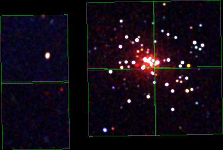
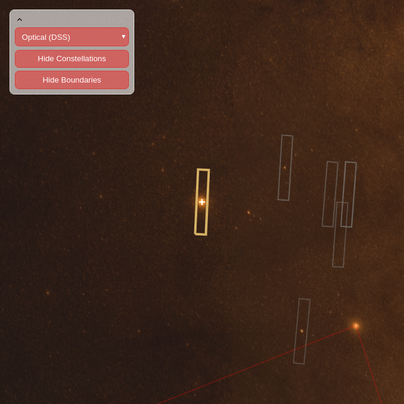

Viewing the observation
We provide five or siz views of the science observations:
- Chandra
-
This view is only shown when the Chandra data for the observation has been made publically available. This generally means that the observation was taken long-enough ago that the embargo period has passed (this is a one-year period after the observation was taken that the data is only available to the proposing Scientist, so that they can analyze the results and write up one or more papers), although some observations become public immediately.
The Chandra images are created to provide a "quick look" at the data for the observers, and is not going to look as visually stunning as those released on the Chandra Photo Album, or press releases from other satellites such as the Hubble or Spitzer Space Telescopes. They can also show a number of instrumental features, such as the edges of the ACIS detectors, as shown in this observation of the Cygnus A galaxy cluster:

or the dispersed photons from the two parts of the High-Energy Transmission Grating in this observation of SMX X-3:

The spatial resolution of Chandra is so high that sometimes it can be hard to see there's a source in these images, such as in this HRC-I calibration observation of Ar Lac:

- DSS
-
This shows the STScI Digitized Sky Survey image of the sky surrounding the target. These images are scans of observations of the night sky made with small (for modern standard) telescopes using photographic plates; they therefore represent a good representation of the night sky you would see if your eyes were extremely sensitive. Please see the Wikipedia article on Digitized Sky Surveys for more information.


Here we show two DSS images: the first is an ACIS-S imaging-mode observation of the Globular Cluster M22. The aim point of the telescope is shown by the red cross and the six squares labelled 0 to 5 show the locations of the ACIS-S chips during the observation (the orientation is determined by the choice of aim point and the roll angle of the spacecraft during the observation). The four chips in a two-by-two arrangement to the left of the ACIS-S array shows the location of the ACIS-I array chips during the observation. The choice of chips that are turned on during an observation is made by the observer: for this observation they are the central four ACIS-S chips (labelled as 1 to 4 in red), although the outer two (labelled with green numerals) are optional and may be turned off if observational constraints require it.
The second is an ACIS-I imaging-mode observation of the Andromeda Galaxy (also known as M31). In this case the aim point is on the ACIS-I array and two of the ACIS-S array chips (ACIS-S2 and ACIS-S3) may also be turned on.
Also labelled are the stars used to keep track of the telescope pointing during an observation (the Guide Stars) and those stars used after the telescope slew to ensure that the field has been correctly identified (the acquisition stars).
Additional labels and rectangles may be drawn for more complicated observations, such as those using only a fraction of a chip - the "sub-array mode" - in order to observer very bright sources.
The labels YOFF, ZOFF, ZSIM, and ACIS PB indicate parameter values used in the observation, such as the location of the instrument bench which holds the ACIS and HRC detectors.
- RASS
-
This shows the ROSAT All Sky Survey data available for the area. This survey was made by the ROSAT satellite - a German-led mission - which covered virtually all the sky using an X-ray imaging detector. This detector was only sensitive to "soft" X-rays - roughly 0.1 to 2.5 keV - and had a significantly larger PSF than Chandra.


The RASS view shows the same outline as the DSS image, but does not include the location of the stars used for acquisition and monitoring (they are generally not strong X-ray emitters). It is not uncommon to be unable to make out an X-ray source in the RASS data at the aim point of the Chandra observation, as it is in the M22 case. M31 is a bright X-ray source and so is seen in the RASS.
- PSPC
-
This view shows the ROSAT PSPC data available for the area, taken from the "pointed phase" of the Observatory's lifetime. Since this did not cover the whole sky, regions may contain no data, or the data only partly covers the image. if present, the data is generally of "higher quality" than the All-Sky-Survey data since the observation times are generally significantly longer than, and the PSF size is slightly smaller than, the RASS.


In this case there were two PSPC observations of the M22 field, one centered on M22 and one wich just overlapped it to the right. Both observations were significantly longer than the RASS observation - shown by the larger number of counts in the background and the fact that some sources can just be seen near M22 that are not obvious in the RASS data. As with Chandra, PSPC observations have a spatially-varying PSF; as you move further from the center of the observation, the PSF increases (this does not happen for the RASS observations due to the way those observations were taken). This can be seen by viewing the source seen in both the RASS and PSPC images; it is far off axis in the PSPC case which means its PSF is larger, and shows more structure, than if it were on axis.
The area around M31 was covered by many PSPC observations, and you can make out the emission from the halo of the galaxy as well as some of the point sources; these are mostly X-ray binaries in the galaxy, but some may be background Active Galactic Nuclei (AGN).
This is a three-color image of M31 from a single six and a half hour ACIS-I observation, taken by Chandra in December 2006, as part of a program to study Black Hole X-ray Nova. The green squares show the location of the four ACIS-I and two ACIS-S chips that were turned on for the observation (the roll angle of the satellite was different from that of the M31 observation shown above). Many more point sources are seen than in the PSPC data, due to the significantly greater spatial resolution of Chandra, and the wider pass band (roughly 0.5 to 7 keV rather than 0.5 to 2.5 keV) means that we have some information on the spectra of these sources, shown by the colors in this image: red sources are "soft", with most of their emission below about 1.2 keV (the hot gas created by supernovae and the formation of the galaxy is predominantly red); green sources have most of their emission between 1.2 and 2 keV; blue sources are "hard", with most of their emission above 2 keV; and other colors are due to mixtures of these. M31 has been observed many times by Chandra - since it is a nearby galaxy - leading to many exciting discoveries about its black-hole population.
- Details
-
A list of the observation details is displayed; this includes more information than provided by default, and is considered an "expert" view.

- WWT
-
The WWT link shows the approximate field of view of the observation using the HTML5 version of Microsoft's World Wide Telescope - aka WWT - service. It only provides a small subset of the features of the full HTML5 web client.

This shows an optical image of the sky - like the DSS version above but much deeper - with an approximate overlay of the instrument, as the green outline. Please note that this outline does not exactly match that shown in the DSS/RASS/PSPC views: it does not account for the exact positioning of the instrument in the focal plane of the telescope and - for ACIS - only shows either the ACIS-S or ACIS-I array. The red lines at the bottom of the image show the nearest constellation; not shown are the yellow lines indicating the boundaries of the constellations. Both of the constellation views can be toggled on or off.